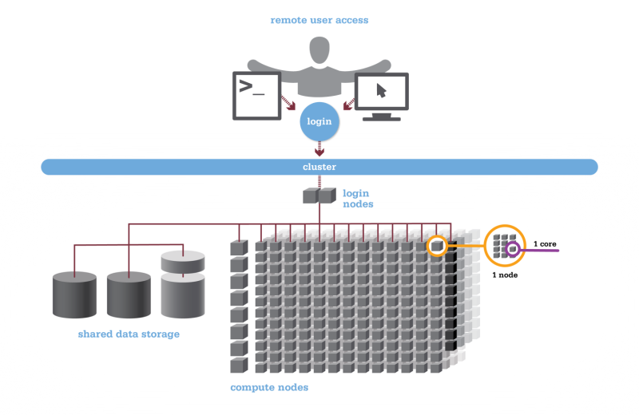
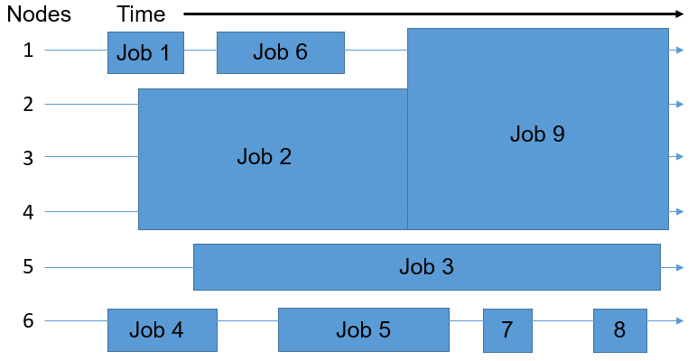
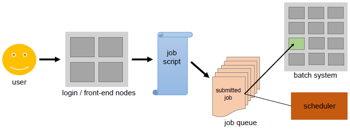

11 HPC basics
11.1 The anatomy of an HPC cluster
11.1.1 Hardware
A high-performance computer cluster is a large collection of computers sharing a file system (Figure 11.1). Each computer is called a node, and these nodes are divided into two groups: login nodes and compute nodes. Login nodes are like a lobby area for the HPC; they are where you end up when you first enter. There are usually just a few login nodes. The vast majority of the nodes in an HPC are compute nodes; they are the workhorses of the HPC. Each compute node has some number of processors, or cores (e.g. 16) as well as some amount of RAM shared among those cores (e.g. 128 GB).

11.1.2 Software
Typically, HPC clusters come with several version of a number of standard softwares pre-installed for all users. Users can build up their computing environment by loading modules corresponding to specific versions of specific softwares (e.g. R/4.3.1). The command module avail lists all available modules that can be loaded by the user, while module load <module_name> loads the specified module. The module system provides a convenient way to dynamically modify a user’s environment to include the necessary executables, libraries, and other resources required by a software package. This approach allows multiple versions of software to coexist on the cluster and enables users to switch between them as needed, facilitating reproducibility and flexibility in using various software tools and libraries on HPC clusters.
11.2 Logging onto a cluster
Logging onto a cluster can be done either via the Terminal or via a remote desktop. I will focus on the former approach. To log into a cluster via the Terminal, one typically uses ssh, e.g.
ssh ekatsevi@hpc3.wharton.upenn.eduUsually, you will be required to enter a password at this stage. However, I recommend setting up SSH keys in order to avoid entering your password each time you log onto the cluster. Upon gaining access, you will land in a login node.
11.3 Two modes of interacting with an HPC cluster
There are two modes of interacting with an HPC cluster: interactive jobs and batch jobs.
An interactive job entails directly entering a compute node and running computer programs from there. (It may be tempting to start computing directly in a login node, but this is strongly discouraged.) Interactive jobs are useful for initial exploration and debugging but not for more serious computations. Indeed, interactive jobs do not give you access to multiple compute nodes and whatever computations you start will be interrupted if you lose connection with the cluster.
A batch job is a computing job that you “send to the cluster” for completion.The power of batch jobs is that you can submit many at a time in order to take advantage of the large number of computers in the cluster. Furthermore, once you submit a batch job, you need not be logged into the cluster for the job to finish running. Typically, batch jobs are submitted en masse via a submission script.
11.4 Requesting resources via the scheduler
Whether you would like to run an interactive job or a batch job, you need to request resources (the number of cores, the amount of computing time, and the amount of memory) from the scheduler, a software running on the HPC that allocates shared resources among its users. Below is an example of how a scheduler may allocate resources to several jobs.

Jobs can be scheduled based on various algorithms, which take into account their resource requests and their order in which they are submitted. Any submitted job lands in the queue, where it waits until there are available resources to run. Many HPC clusters have multiple queues for different kinds of jobs. For example, there may be separate queues for jobs with particularly short or long requested runtimes, or for jobs with particularly small or large requested memory allocations.

There are several different schedulers in use by HPC clusters, two of the most common being Sun Grid Engine (SGE) and Simple Linux Utility for Resource Management (SLURM). These different schedulers have different syntax for tasks like submitting jobs, viewing the job queue, etc.
| Task | SGE Command | SLURM Command |
|---|---|---|
| Submit interactive job | qrsh |
srun |
| Submit batch job | qsub <script> |
sbatch <script> |
| Resource request flags | -l h_rt=01:00:00 -l h_vmem=1G |
--time=01:00:00 --mem=1G |
| Delete a job | qdel <job_id> |
scancel <job_id> |
| View job status | qstat |
squeue |
| Job accounting | qacct |
sacct |
11.5 Example batch submission script
To illustrate more concretely how one might submit multiple batch jobs to the scheduler, suppose you would like to carry out a numerical simulation that compares 100 different parameter values (say 1, 2, …, 100). To do so, you would first create an R script called run_sim.R, which takes as a command-line argument the parameter value and writes the results of the corresponding simulation to file. Then, you would create a bash script called run_sim.sh, whose job is to set up the computing environment and then call run_sim.R with the given parameter:
run_sim.sh
#!/bin/bash
# read command-line argument
param=$1
# load requisite modules
module load R/4.3.1
# call run_sim.R with specified parameter
Rscript run_sim.R $paramThen, you would create a bash script called submit_jobs.sh, which submits a special kind of job called an array job. Technically this is just one job, but it consists of many tasks, one for each simulation setting (specified by the environment variable SGE_TASK_ID provided by the scheduler, in the case of SGE). This is conceptually similar to, but more efficient than looping over all the parameter values and submitting a batch job for each.
submit_jobs.sh
#!/bin/bash
#$ -N my_simulation # Specify job name
#$ -j y # Merge standard output and standard error
#$ -l h_rt=01:00:00 # Request 1 hour of runtime
#$ -l h_vmem=1G # Request 1 GB of virtual memory per slot
#$ -t 1-100 # Specify the task range for the array job
# Calculate parameter setting for this task via scheduler's $SGE_TASK_ID
parameter_value=$SGE_TASK_ID
# Run the simulation with the specific parameter value
bash run_sim.sh $parameter_valueFinally, we would submit this array job to the scheduler (in this case, SGE) via
qsub submit_jobs.sh11.6 Monitoring the progress of batch jobs
You can monitor the progress of your batch jobs (or tasks, for array jobs) by viewing the status of queued or running jobs (via qstat on SGE or squeue on SLURM). These commands will show you how many of these jobs are still waiting in the queue and how many are running. If you wish to monitor the progress of each job (or task) individually, you can use its output file. These output files will usually be named something like <job_name>.o<job_id>.<task_id>, and will appear by default in the same directory as your submission script. If your code (in this case, run_sim.R) prints statements about its progress, then these will show up in the output file corresponding to each job and task.
11.7 Debugging errors in batch jobs
Errors in your batch jobs will typically be due to one of two reasons: a bug in your code or an inadequate resource request. The former issue is always present, but the latter is HPC-specific.
11.7.1 Bug in your code
Usually, you would develop and debug your code locally prior to moving it to the cluster. This strategy should help reduce the number of bugs you encounter when running code on the cluster. If you do encounter a bug in your code on the cluster, then you can make note of the job and/or task id and try to reproduce and fix the bug in an interactive session on the cluster. Alternatively, you can go back to your local machine to fix the bug.
11.7.2 Inadequate resource request
Suppose you requested an hour for a given batch job (or task) and that job actually needed two hours. In this case, the scheduler unceremoniously kills that job after one hour and prints an error message in the corresponding log file. In addition to inspecting the log file, you can get a better sense for what happened with a killed job via the job accounting feature of the scheduler. For example, on SGE you can type
qacct -j <job_id> -t <task_id>to get a wealth of information about the given job/task. To deal with insufficient memory or time requests, simply restart the job with an increased memory or time request. You may need to run some pilot jobs to get a better sense for how much memory or time your code will need.